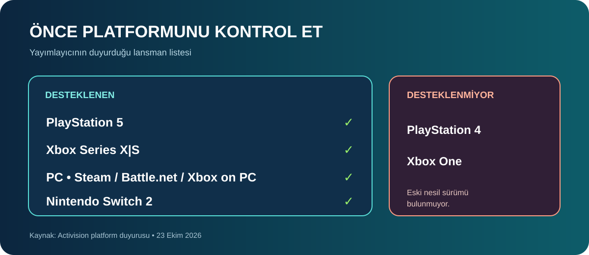
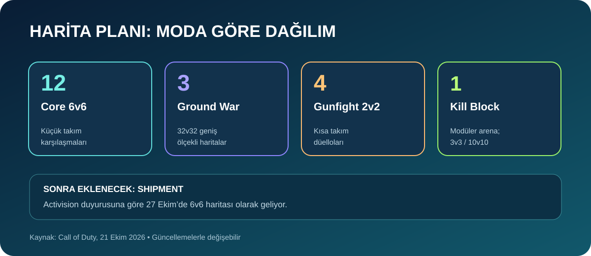
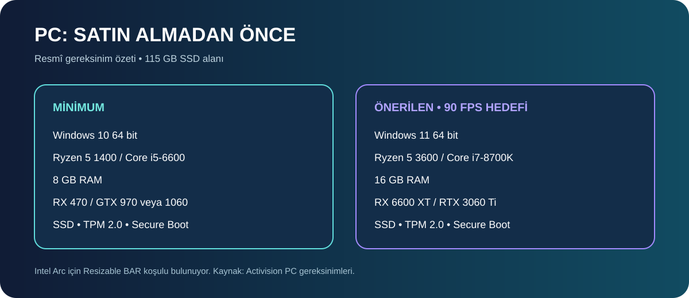
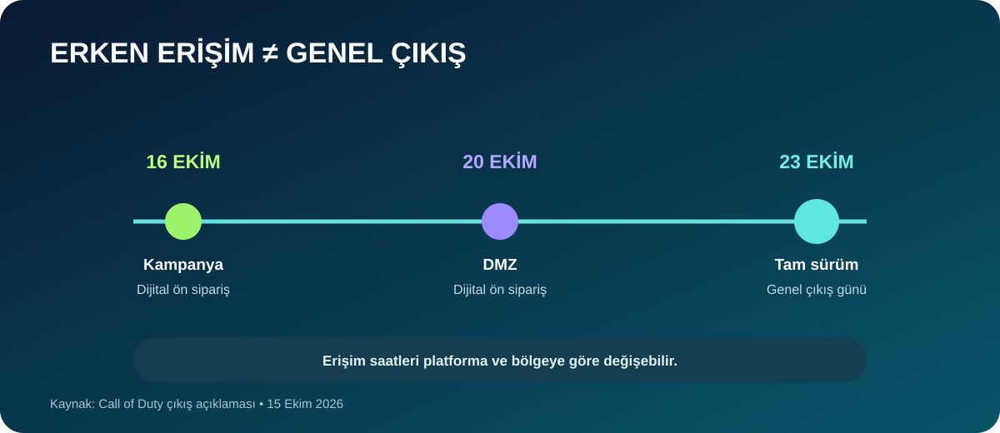

Call of Duty: Modern Warfare 4, 23 Ekim 2026’da tam sürüm olarak yayımlandı. Activision’ın duyurularına göre oyun PlayStation 5, Xbox Series X|S, PC ve Nintendo Switch 2’de yer alıyor; PS4 ve Xbox One sürümü yok. Satın almadan önce Game Pass beklentisini, bilgisayar gereksinimlerini ve çıkış haritalarının dağılımını kontrol etmekte fayda var.
Bu yazı bir inceleme veya kişisel oyun deneyimi iddiası taşımıyor. Çıkış gününde oyuncunun kararını etkileyen bilgileri Activision ve Xbox’ın resmî açıklamalarından derledik. Türkiye mağazalarındaki fiyat ve kullanılabilirlik bölgeye ve platforma göre değişebileceği için satın alma ekranındaki güncel tutarı esas alın.

Hangi platformlarda oynanıyor?
Activision’ın duyurduğu sürümler PlayStation 5, Xbox Series X|S, PC ve Nintendo Switch 2 için. PC sürümü Battle.net, Xbox on PC ve Steam üzerinden sunuluyor. Şirket, PS4 ve Xbox One’ın desteklenmediğini açıkça belirtiyor. Eski konsol sahibiysen satın almadan önce mağazada doğru sürümü aradığından emin ol.
Xbox sürümü Xbox Play Anywhere olarak listeleniyor. Nintendo Switch 2 sürümünün mağazandaki bölgesel erişimini kendi hesabından kontrol et. Çapraz ilerleme veya içerik aktarımı gibi özelliklerin tüm platformlarda aynı çalıştığını varsayma; hesap ve oyun içi ayarlarını kontrol et.
Game Pass’e dâhil mi?
Hayır, çıkış gününde Modern Warfare 4 Game Pass kataloğunda değil. Call of Duty’nin 15 Ekim tarihli açıklamasına göre oyun ilk aşamada ayrı satın alınmalı; Game Pass’e en erken 2027 tatil döneminde eklenmesi planlanıyor. Abonelik sahibi olmak bugün ayrıca satın alma gereğini ortadan kaldırmıyor.
Bu bilgi gelecekte değişebilir. Daha sonra abonelik kataloğunu yeniden kontrol et ve katalogdaki önceki Call of Duty oyunlarıyla bu yeni oyunun erişimini birbirine karıştırma.

Çıkışta kaç harita var, Shipment ne zaman geliyor?
Activision’ın listesinde 12 adet 6’ya 6 Core, 3 adet 32’ye 32 Ground War ve 4 adet 2’ye 2 Gunfight haritası ile düzeni değişebilen Kill Block arenası yer alıyor. Kill Block, 3’e 3 ve 10’a 10 Gunfight biçimlerini destekliyor. Yayıncı, Shipment’ı çıkıştan kısa süre sonra 27 Ekim tarihinde eklenecek ayrı bir 6’ya 6 haritası olarak duyurdu.
Bu yüzden çıkış içeriğiyle sonraki güncellemede gelecek haritaları ayırmak gerekiyor. Resmî duyuruda ayrıca 12’den fazla mod, ilk gün için 33 silah ve 33 operatör açıklanmış. Bunlar yayıncının içerik sayıları; öğelerin açılma koşulları oyundaki ilerlemeye bağlı olabilir.
PC’ye kurmadan önce sistemini kontrol et
Activision’ın PC gereksinimleri tablosunda minimum profil Windows 10’un güncel 64 bit sürümünü, 8 GB RAM’i ve SSD’de 115 GB alanı istiyor. Önerilen profil, yüksek grafik ayarlarında çok oyunculu mod için 90 FPS hedefiyle yayımlanmış; bu üreticinin hedefidir ve her bilgisayarda aynı kare hızını garanti etmez.

| Bileşen | Minimum | Önerilen (90 FPS hedefi) |
|---|---|---|
| İşletim sistemi | Windows 10 64 bit | Windows 11 64 bit |
| İşlemci | Ryzen 5 1400 veya Core i5-6600 | Ryzen 5 3600 veya Core i7-8700K |
| Bellek | 8 GB RAM | 16 GB RAM |
| Ekran kartı | RX 470; GTX 970/1060; Intel Arc A580 | RX 6600 XT; RTX 3060 Ti; Intel Arc B580 |
| Depolama | 115 GB boş alan ve SSD gerekiyor | |
PC’de ayrıca TPM 2.0 ve Secure Boot zorunluluğu belirtilmiş; Intel Arc ekran kartlarında Resizable BAR gerekiyor. Bu ayarlar kapalıysa donanım yeterli olsa bile oyuna erişemeyebilirsin. BIOS ayarlarını değiştirmeden önce bilgisayar üreticisinin yönergelerini izle; emin değilsen destek al.
Kurulum öncesi SSD’deki boş alanı, Windows güncellemelerini, ekran kartı sürücüsünü ve internet bağlantını da kontrol et. Activision, ek güncellemeler için daha fazla depolama gerekebileceğini not ediyor. İndirme boyutu platforma göre değişebilir; mağazadaki kurulum ekranını esas al.
Erken erişim ile bugünkü çıkış aynı şey değil
Dijital ön sipariş verenler kampanyaya 16 Ekim’den, DMZ moduna 20 Ekim’den itibaren erken erişim aldı. Bunlar tam oyunun herkese açıldığı tarih değildi; 23 Ekim genel çıkış günü. Bu nedenle erken erişim videoları ve yorumları birkaç gün önce yayımlanmış olabilir. Sunucu yoğunluğu, indirme süreleri ve bölgesel mağaza saatleri de değişebilir.

Satın almadan önce kısa kontrol listesi
- Platform: PS5, Xbox Series X|S, PC veya Switch 2 mağazasında doğru sürümü seç; PS4/Xbox One sürümü yok.
- Abonelik: Çıkış günü Game Pass erişimini varsayma; bölgesel mağazadaki fiyat ve paketleri karşılaştır.
- PC: İşlemci, ekran kartı, RAM, SSD alanı, TPM 2.0 ve Secure Boot koşullarını birlikte değerlendir.
- Haritalar: Shipment 27 Ekim için duyurulmuş; sonraki eklemeleri çıkış günü içeriğinden ayır.
- İnceleme beklentisi: Bu yazı resmî bilgi rehberidir, oynanış testi değildir. Performans ve sunucu durumu için kendi platformundaki güncel raporları da izle.
Sonuç
Çıkış günü kararını en çok platform uyumluluğu, ayrı satın alma gereği ve PC’deki depolama/güvenlik koşulları etkiliyor. Harita planındaki sonraki belirgin ekleme Shipment: 27 Ekim. Fiyatı kendi mağazandan doğrula; lansman sonrası değişiklikler için Activision’ın yama notlarını takip et.
Bu rehber 23 Ekim 2026 itibarıyla Activision ve Xbox’ın yayımladığı bilgilere dayanır. Fiyatlar ve içerik güncellemeyle değişebilir. TechWave bu oyunu bağımsız olarak test ettiğini iddia etmez.
Kaynaklar
- Activision: platformlar ve çıkış tarihi (28 Mayıs 2026)
- Call of Duty: çıkış haritaları ve modları (21 Ekim 2026)
- Call of Duty: Game Pass ve ayrı satış bilgisi (15 Ekim 2026)
- Call of Duty: PC özellikleri ve sistem gereksinimleri (29 Eylül 2026)
- Xbox Wire: 19–23 Ekim haftasının oyunları (16 Ekim 2026)
Oyun kategorisindeki diğer yazılara kategori sayfasından göz atabilirsiniz.